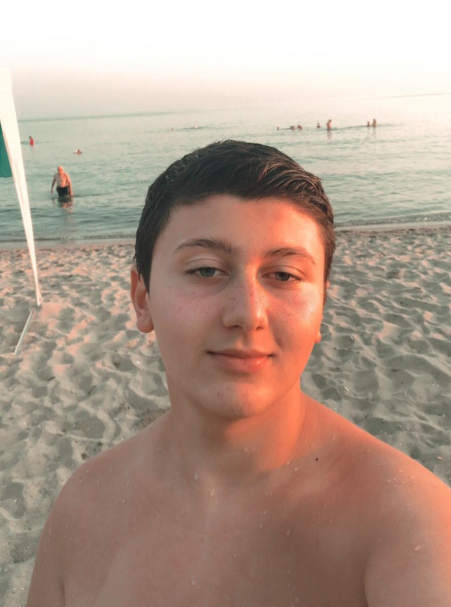

Ben Kimim
Merhaba, Ben Mert. 13 yaşındayım ve küçüklüğümden beri bilgisayarlarla ilgileniyorum. Bu hevesimi bir mesleğe dönüştürmek istedim ve şu anda web geliştirme alanında çalışıyorum. Bu da ilk resmi sitem olacak. Sitemizde gün geçtikçe geliştirmeler yapmaya devam edeceğim. Daha fazla bilgi edinmek istersen, biografime göz atabilirsiniz. Eğer benimle iletişime geçmek istersen, iletişim bölümünden bana ulaşabilirsin. Sitemi ziyaret ettiğin için ve bu vakit ayırıp bu yazıyı okuduğun için teşekkür ederim. Beni sosyal medya bağlantılarımdan takip ederseniz,sevinirim.